← 返回阅读库 · 原论文目录
论文讲解阅读文档 · 表征学习 · v187
VideoMoCo: Contrastive Video Representation Learning with Temporally Adversarial Examples
视频时长 00:06:42；讲解文字 3,019 字符；提取讲解画面 22 张。按视频原顺序阅读，每段文字保留时间戳。
文字来自整段视频的自动语音转写，按自然停顿分段，并与 PPT / 论文页面 / 演示画面对齐。未将讲解压缩为摘要；术语、数字和口述公式请结合画面及原论文核对。 阅读稿已校正规范部分明确术语误识别；原始逐字稿和每处修改记录另行保留。
讲解画面为源视频截图（640×360），不是可编辑 PPT 文件。全片按每秒 2 帧扫描内容变化，逐步展开页保留；连续动画保留代表画面。清晰度受源视频限制。
下载完整资料包 · 含离线 HTML、PDF、Word、全部 PPT 画面和字幕。
原论文与材料
VideoMoCo: Contrastive Video Representation Learning with Temporally Adversarial Examples · 下载完整 PDF（10 页）
按时间阅读
00:00:00–00:00:13 · 画面 001
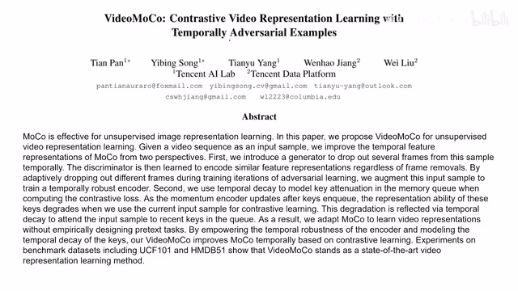
00:00:00–00:00:13 · 画面 001大家好,今天我们来快速出一篇论文,Video MoCoContrastive Video Representation Learning with Temporally Adversarial Examples 这篇论文呢,你看原来是这个 MoCo,它是用在这个 image 上面的,变成 video 相关的东西，那当然不能直接拿过来用啊,针对 video 的一些特性的,我们要对 data representation 这些东西做一点改进,这个呢就是本文的主要贡献，那下面我们来看本文的具体的贡献啊
00:00:13–00:00:23 · 画面 002
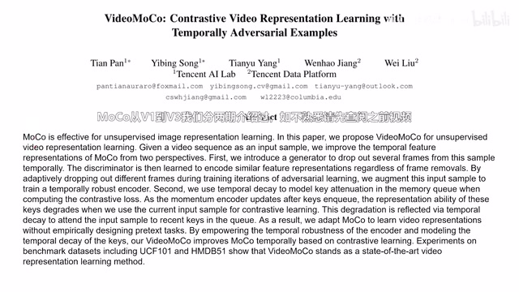
00:00:13–00:00:23 · 画面 00200:00:23–00:00:28 · 画面 003
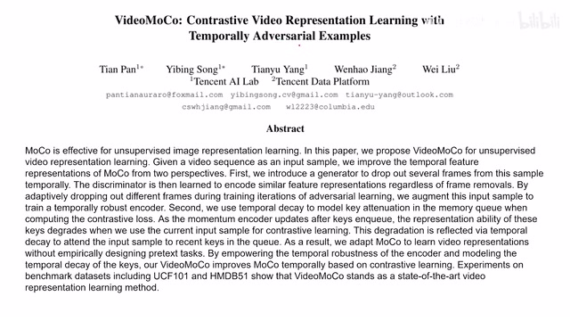
00:00:23–00:00:28 · 画面 00300:00:28–00:00:46 · 画面 004
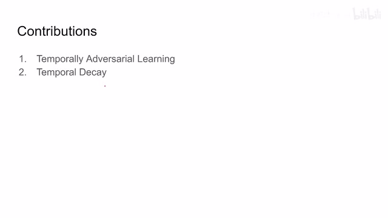
00:00:28–00:00:46 · 画面 004主要两点，其实最重要的就是这个 temporally adversarial learning，这是一个有对抗的一个性质，为什么呢？我们等一下仔细会讲到。第二个呢，就是这个 temporal decay，这个也是非常好理解的一个概念，我们直接来看这个图呢，就很直观的反映出了本文方法这个 pipeline。我们输入的是这个 video 进来，上面我们经过了一通操作，这里呢我们先不看它具体是什么操作，得到一种 video。下面呢是我们原始的这个 video。
00:00:46–00:00:53 · 画面 005
00:00:46–00:00:53 · 画面 00500:00:53–00:00:55 · 画面 006
00:00:53–00:00:55 · 画面 00600:00:55–00:02:43 · 画面 007
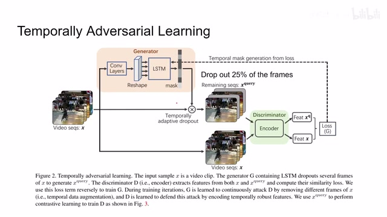
00:00:55–00:02:43 · 画面 007实际上，虽然说是原始的，但肯定是经过了各种 data augmentation，然后呢，同一个 video 的两种 view 对吧？经过一个 encoder 得到两种 representation，然后呢就可以构建 loss 了。那么继续来看我们的这个对抗在哪里呢？我们发现这里有个 generator，一个 discriminator，他们两个在对抗。那对抗是什么形式呢？这里我们继续来看，我们的一个 video 呢进来之后，过一个 convolution，然后呢再过一个 lstm 得到一些
预测。那么这个预测呢，是对这个视频中每一帧的一个重要性的一个预测，相当于这个 lstm 给视频中的每一帧给出一个分数。那有了这个分数呢，我们就从高往下排吧，然后呢去掉前面的 25%的这个 frame。那具体来说呢，就是我根据这个得分把其中的一些帧去掉，然后呢得到这样一个视频，可以看到它里面有一些帧呢已经变空了。那么把这个视频呢放到我们 discriminator 里面做 contrastive learning 那就可以了。那么这里为什么我们说它是一个对抗的过程呢？我们看到以这个 encoder discriminator 这个视角来看它呢，想要让这两个 representation 尽量的接近，因为我们知道这两个 representation 它是来自于同一个这个 video 嘛，它们理应在这个 feature space 里面变得非常接近。而对于这个 generator 来说呢，它要跟这个 discriminator 对抗。
那么他的这个意图呢就很明显了，就是我要选一些哎关键的这些帧能给他 drop 掉，这样子呢让我们的 encoder 啊认为说这两个视频是两个视频。那么这样一来一去呢，我们这个对抗的过程呢就产生了。那么下面呢我们继续来看这个里面的 loss 啊，其实也非常简单，对于我们的这个 generator 来说呢，你可以看到它是要最大化的一个距离，这个距离呢是这个 L1 distance。
00:02:43–00:03:45 · 画面 008
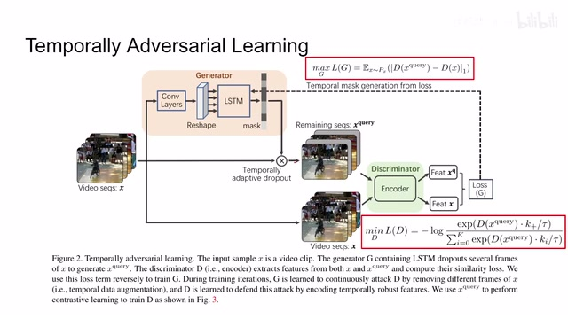
00:02:43–00:03:45 · 画面 008是谁和谁的 distance 呢？原来是这个输入的视频和这个经过 drop 之后的视频，他们的这个 feature 在这个 feature space 里面的这个 l1 distance。那作为 generator 来说呢，他希望把这个距离最大化，就是希望把这个 discriminator 给他拦住啊，让他看不出来这两个是原来是一个视频。而这个 discriminator 来说呢，他的任务就非常简单了对吧？他希望我们的这个 query和之前的 key，为什么这 key 呢？因为我 moco 里面维护了一个 memory bank 吗？所以呢我就不用在这再提一遍这个 representation 了啊，直接用原来的 key 就可以了。那同时呢，你看到这个 loss 的形式呢，就是一个 InfoNCE 的形式，一个 contrastive loss 的形式。那这样子我们交替优化这两个 loss 呢，就可以让这两个网络呢一起来进一步获得更好的 representation。
那么其实换一种角度理解来说，其实我们是在搜索一种好的 data augmentation，这种 data augmentation 能够帮助我们的 representation learning，特别是 contrastive learning 的过程。所以说这也是一个挺有意思的方向。现在我们的网络结构已经这样了，loss 已经这样了，基本卷不太动了。大家都把目光投向 data augmentation 这一块了，而且这种实现的 inductive bias 给的很强，它的实践的结构也不是很复杂。
00:03:45–00:03:47 · 画面 009
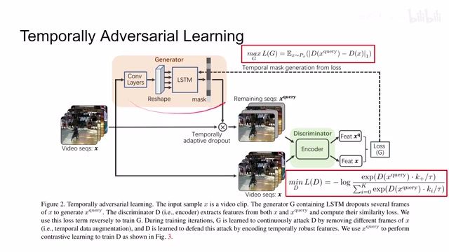
00:03:45–00:03:47 · 画面 00900:03:47–00:04:06 · 画面 010
00:03:47–00:04:06 · 画面 01000:04:06–00:04:07 · 画面 011
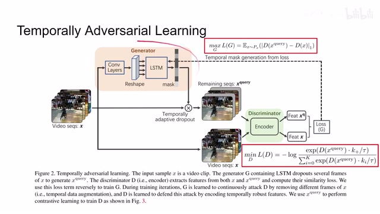
00:04:06–00:04:07 · 画面 01100:04:07–00:04:23 · 画面 012
00:04:07–00:04:23 · 画面 012那么肯定后面会有更复杂的关于 data augmentation 这一块的处理，在后面的工作中肯定会出现。总之，本文提供了一个不错的思路。接下来我要看本文的第二贡献是 temporal decay，它的 intuition 其实非常直接。就是说 momentum encoder 因为它是在不断的训练的，那么你越早进来的这些样本，它其实就跟我们现在的情况就越不太相似。因此，我们要更少关注这些早期的样本。
00:04:23–00:05:08 · 画面 013
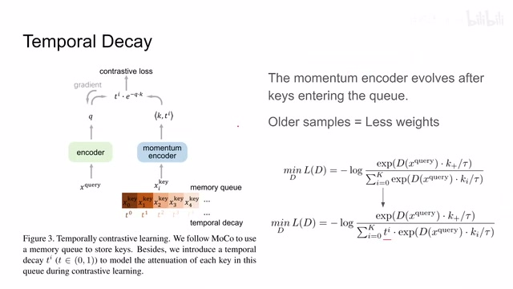
00:04:23–00:05:08 · 画面 013所以看到原来呢，我们的 discriminator loss 是一个 InfoNCE。这里呢做了一个改动，这里呢加了一个 decay factor，这个叫 t。那简单来说呢，就是我越早进来的样本呢，我这个 decay 的这个 factor 成的就越多嘛，对吧？它是一个指数倍的这样子呢，它在这个负样本的这个权重中呢占的就越小。是非常小的一个改动，该是一算一个实用的小技巧吧。
好的，那么以上就是本文的这个主要贡献。那么下面我们来看作者汇报的结果。首先是一些 visualization，我们看到这边具体的 drop 这些 frame 是怎么操作的。然后呢，这里呢作者对比了这个本文提出的 VideoMoCo 和原装的这个 MoCo 啊，用这个 entropy 来表示这个我们的这个模型对我们的这个输入是多么的确定。
00:05:08–00:05:09 · 画面 014
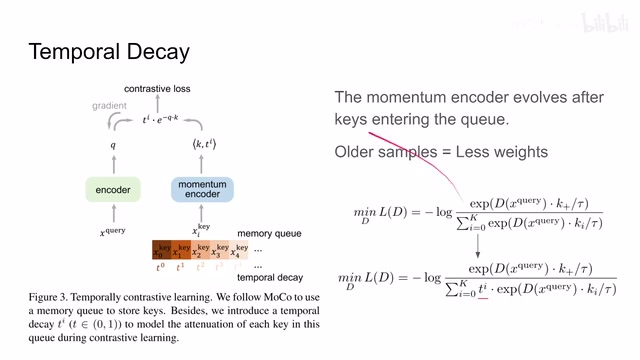
00:05:08–00:05:09 · 画面 01400:05:09–00:05:12 · 画面 015
00:05:09–00:05:12 · 画面 01500:05:12–00:05:41 · 画面 016
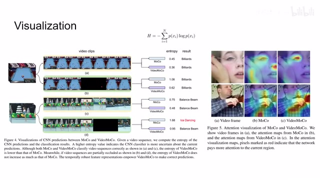
00:05:12–00:05:41 · 画面 016那显然这个 entropy 越大呢，说明我们的这个模型越不确定说当前输入的进来这个东西是个什么玩意儿。可以看到这是一个很好的可视化啊，包括选了一个例子啊，这个地方 MoCo 就判断错了，本文的方法呢还可以保持正确的判断。那这边呢是关于这个 attention 的这个 visualization，本文的方法注意的这个位置在这些例子中看起来更加合理一些。当然这些都是常规的操作啊。
00:05:41–00:05:42 · 画面 017
00:05:41–00:05:42 · 画面 01700:05:42–00:06:01 · 画面 018
00:05:42–00:06:01 · 画面 018然后再往下来是一些量化的结果这里是一些 ablation 我们怎么样确定这些参数 k 就是我们几个 videos 里面要 drop 多少帧然后这边是 different temporal decay 参数 t 它的值经过一番挑选选出来这么一个结果最后还是按照惯例对比之前的一些结果当然这篇文章出的比较早了所以它对比的这些方法我们就参考一下
00:06:01–00:06:18 · 画面 019
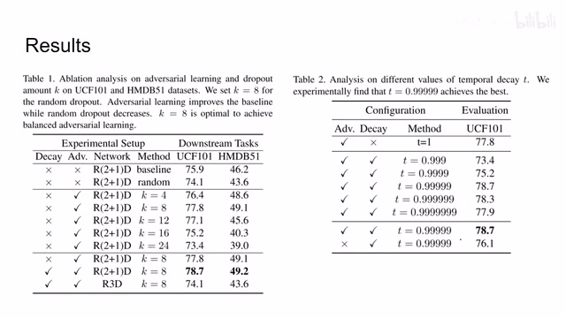
00:06:01–00:06:18 · 画面 01900:06:18–00:06:20 · 画面 020
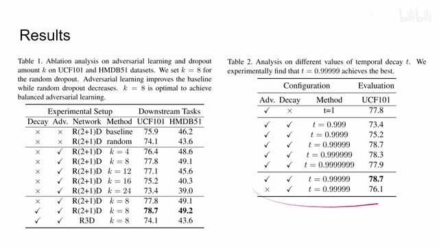
00:06:18–00:06:20 · 画面 02000:06:20–00:06:41 · 画面 021
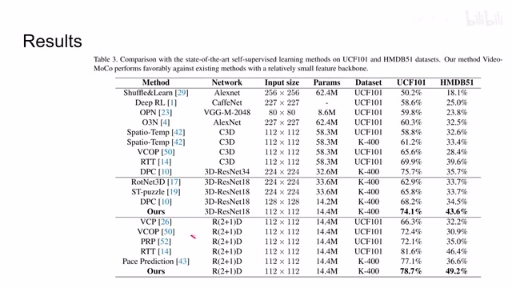
00:06:20–00:06:41 · 画面 021他自己本身也在我们最近介绍的很多文章中提到，也是一个很强的一个 baseline。好了，那么以上就是我对这篇论文的一个简单的分析。那么感谢您的收看，再见。
00:06:41–00:06:42 · 画面 022
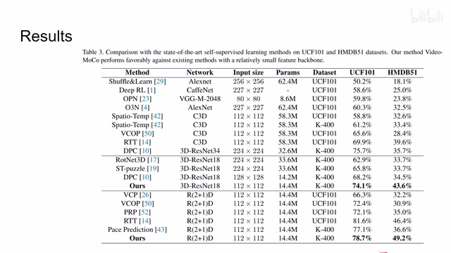
00:06:41–00:06:42 · 画面 022转写与来源说明 · 0 个自动复核提示
保留 15 个原始语音片段，0 个片段触发自动复核提示。提示仅用于定位可能的术语、重复或识别问题，不等于已确认错误。
讲解画面为源视频截图（640×360），不是可编辑 PPT 文件。全片按每秒 2 帧扫描内容变化，逐步展开页保留；连续动画保留代表画面。清晰度受源视频限制。
原视频：paper/合集_2026-10-16_表征学习/[论文简析]VideoMoCo ...Temporally Adversarial Examples[2103.05905].mp4
SHA-256：41cd734fb1a60347ec3bb24debf2c23c15086a7de3334b9a31e506f9f5d893a9
全文按视频语音与画面制作。原论文可从上方链接下载；完整资料包保留全文、原始逐字稿、字幕和校对记录。